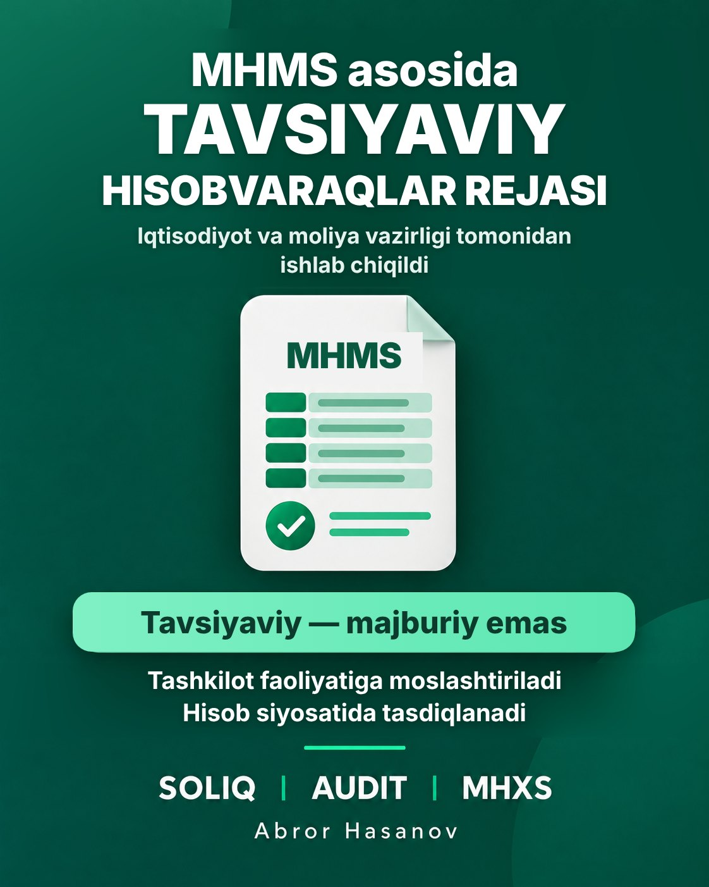

MHMS bo‘yicha tavsiyaviy hisobvaraqlar rejasi ishlab chiqildi

O‘zbekiston Respublikasi Iqtisodiyot va moliya vazirligi tomonidan MHMS asosida moliyaviy hisobot tayyorlaydigan tashkilotlar uchun tavsiyaviy hisobvaraqlar rejasi ishlab chiqildi.
Mazkur hujjat tashkilotlarga buxgalteriya hisobini tizimli tashkil etish va o‘z ishchi hisobvaraqlar rejasini shakllantirishda amaliy namuna bo‘lib xizmat qiladi.
Hisobvaraqlar rejasi aktivlar, majburiyatlar, xususiy kapital, daromadlar, xarajatlar va balansdan tashqari hisobvaraqlarni qamrab oladi.
Muhim jihati: hisobvaraqlar rejasi tavsiyaviy xususiyatga ega bo‘lib, tashkilotlar uchun majburiy hisobvaraqlar tizimini joriy etmaydi. Tashkilotlar uni o‘z faoliyati va qo‘llaydigan MHMS talablaridan kelib chiqib moslashtiradi hamda ishchi hisobvaraqlar rejasini hisob siyosatida tasdiqlaydi.
Tashkilotlar va buxgalteriya hisobi mutaxassislariga tavsiyaviy hisobvaraqlar rejasi bilan tanishib chiqish hamda uni o‘z faoliyatida qo‘llash imkoniyatlarini ko‘rib chiqish tavsiya etiladi.
Hujjatni yuklab olish (.docx)